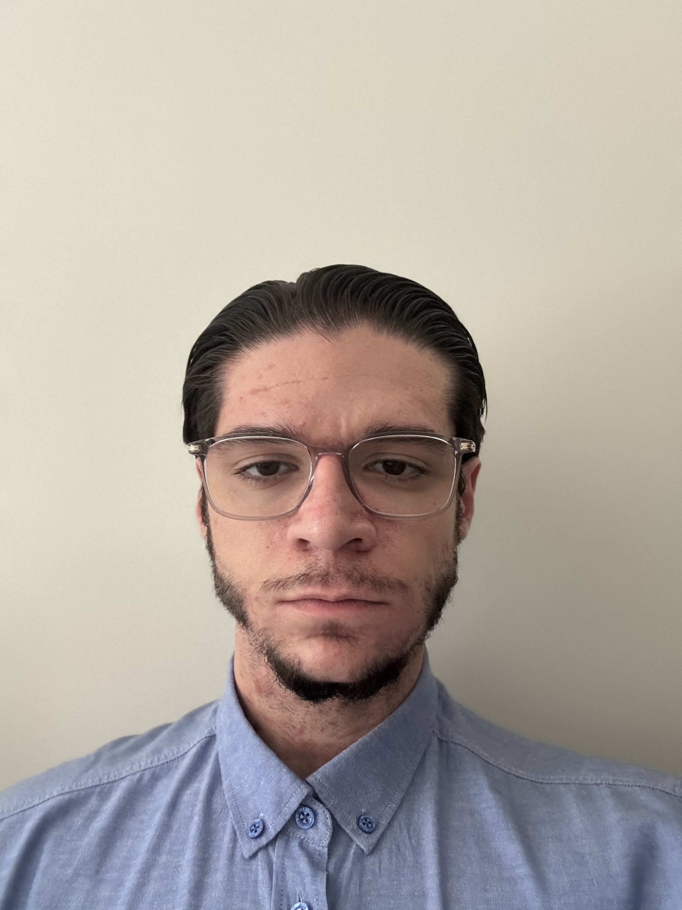

Passionné par la protection des infrastructures réseau, la détection des menaces et la sécurité des systèmes d'information. Ce portfolio retrace mon parcours, mes compétences et mes projets au fil de ma formation BUT R&T.

Actuellement en 1er année de BUT R&T à l'Université de Caen, j'envisage une poursuite d'étude en Master ou en École d'Ingénieurs après mon BUT.
Mon objectif final serait de créer mon entreprise spécialisé en sécurité des SI mais également en réseaux.
Ce site a pour but de vous faire découvrir mes différents projets réalisés en cours d'année, ainsi que mes compétences et mes réflexions sur le métier.
Chaque projet est l'occasion d'approfondir mes compétences techniques, de développer mon autonomie et de progresser vers un profil professionnel solide.